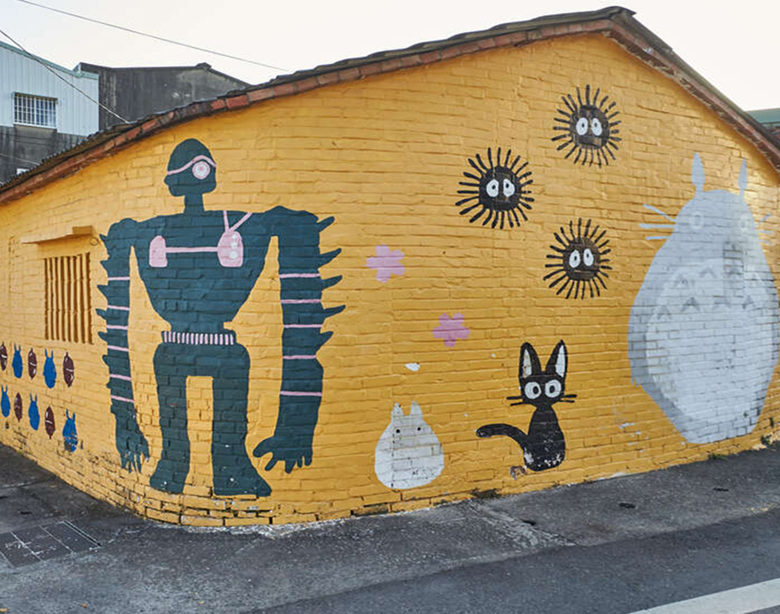

最新消息


最新文章



因編寫網路程式語言，我們相聚了，我們是六位熱愛台南的女子，將在地生活中所感受到的台南溫度，運用網頁讓更多人品嚐台南的美好。
本網站運用1.HTML5 2.CSS3 3.Bootstrap4編寫。過去的旅遊網站，過於繁冗，不易瀏覽。
本網站將台南特色，精簡為1.首頁2.美食3.古蹟4.親子5.文藝，並且考量RWD響應式的架構，製作各類螢幕兼易讀取的網頁。
除了台南特色介紹，更進一部的提供:1.地址2.交通方式3.營業時間 等資訊，達成增加台南觀光人潮、推廣台南的目的。
孔廟坐北朝南。整座孔廟的建築主體是大成殿，殿內主祀至聖先師孔子牌位。遊客可以悠閒地在孔廟漫步，看著紅磚瓦以及綠蔭，沈浸在歷史的氛圍之中，心情會十分的平靜。逛完孔廟，在孔廟對面還有熱鬧的府中街，又稱做孔廟商圈。在府中街，有許多文青式的小店可以逛逛。當然，屬於台南的特色美食在這邊也可以找到，例如深受台南學子推崇的炒泡麵、好吃又好玩的椪糖，可千萬別錯過啦。
地址：台南市中西區南門路2號
交通方式：由台南火車站前搭乘1、3、16、17路公車至建興國中站，延文聖路步行左轉南門路即可到達台南孔廟
營業時間：08：30-17：30(除夕公休)
孔廟坐北朝南。整座孔廟的建築主體是大成殿，殿內主祀至聖先師孔子牌位。遊客可以悠閒地在孔廟漫步，看著紅磚瓦以及綠蔭，沈浸在歷史的氛圍之中，心情會十分的平靜。逛完孔廟，在孔廟對面還有熱鬧的府中街，又稱做孔廟商圈。在府中街，有許多文青式的小店可以逛逛。當然，屬於台南的特色美食在這邊也可以找到，例如深受台南學子推崇的炒泡麵、好吃又好玩的椪糖，可千萬別錯過啦。
地址：台南市中西區南門路2號
交通方式：由台南火車站前搭乘1、3、16、17路公車至建興國中站，延文聖路步行左轉南門路即可到達台南孔廟
營業時間：08：30-17：30(除夕公休)
孔廟坐北朝南。整座孔廟的建築主體是大成殿，殿內主祀至聖先師孔子牌位。遊客可以悠閒地在孔廟漫步，看著紅磚瓦以及綠蔭，沈浸在歷史的氛圍之中，心情會十分的平靜。逛完孔廟，在孔廟對面還有熱鬧的府中街，又稱做孔廟商圈。在府中街，有許多文青式的小店可以逛逛。當然，屬於台南的特色美食在這邊也可以找到，例如深受台南學子推崇的炒泡麵、好吃又好玩的椪糖，可千萬別錯過啦。
地址：台南市中西區南門路2號
交通方式：由台南火車站前搭乘1、3、16、17路公車至建興國中站，延文聖路步行左轉南門路即可到達台南孔廟
營業時間：08：30-17：30(除夕公休)
孔廟坐北朝南。整座孔廟的建築主體是大成殿，殿內主祀至聖先師孔子牌位。遊客可以悠閒地在孔廟漫步，看著紅磚瓦以及綠蔭，沈浸在歷史的氛圍之中，心情會十分的平靜。逛完孔廟，在孔廟對面還有熱鬧的府中街，又稱做孔廟商圈。在府中街，有許多文青式的小店可以逛逛。當然，屬於台南的特色美食在這邊也可以找到，例如深受台南學子推崇的炒泡麵、好吃又好玩的椪糖，可千萬別錯過啦。
地址：台南市中西區南門路2號
交通方式：由台南火車站前搭乘1、3、16、17路公車至建興國中站，延文聖路步行左轉南門路即可到達台南孔廟
營業時間：08：30-17：30(除夕公休)

孔廟坐北朝南。整座孔廟的建築主體是大成殿，殿內主祀至聖先師孔子牌位。遊客可以悠閒地在孔廟漫步，看著紅磚瓦以及綠蔭，沈浸在歷史的氛圍之中，心情會十分的平靜。逛完孔廟，在孔廟對面還有熱鬧的府中街，又稱做孔廟商圈。在府中街，有許多文青式的小店可以逛逛。當然，屬於台南的特色美食在這邊也可以找到，例如深受台南學子推崇的炒泡麵、好吃又好玩的椪糖，可千萬別錯過啦。
地址：台南市中西區南門路2號
交通方式：由台南火車站前搭乘1、3、16、17路公車至建興國中站，延文聖路步行左轉南門路即可到達台南孔廟
營業時間：08：30-17：30(除夕公休)
孔廟坐北朝南。整座孔廟的建築主體是大成殿，殿內主祀至聖先師孔子牌位。遊客可以悠閒地在孔廟漫步，看著紅磚瓦以及綠蔭，沈浸在歷史的氛圍之中，心情會十分的平靜。逛完孔廟，在孔廟對面還有熱鬧的府中街，又稱做孔廟商圈。在府中街，有許多文青式的小店可以逛逛。當然，屬於台南的特色美食在這邊也可以找到，例如深受台南學子推崇的炒泡麵、好吃又好玩的椪糖，可千萬別錯過啦。
地址：台南市中西區南門路2號
交通方式：由台南火車站前搭乘1、3、16、17路公車至建興國中站，延文聖路步行左轉南門路即可到達台南孔廟
營業時間：08：30-17：30(除夕公休)
小豆豆鍋燒意麵是台南人的回憶，裡面裝潢像舊時的冰果室，販賣品項多，除了必吃鍋燒意麵以外，冰品、豆花、水果拼盤、冷飲皆有販售，吃完熱食後不忘來個飯後甜點吧! 絕對是逛完孔廟後必吃的美食啊!
地址：台南市中西區樹林街二段105號
交通方式：由台南火車站前搭乘五號公車抵達體育公園站，約步行五分鐘抵達
營業時間：11:40-21:30
來台南怎麼可以不吃牛肉湯呢，六千牛肉湯凌晨五點開始營業，但生意興隆大概要三四點就要前往店面排隊，不然會撲空喔!新鮮的溫體牛淋上鮮甜的湯頭，絕對為台南之旅帶來美好一天的開始，熱血的衝一波吧!!
地址：台灣台南市中西區海安路一段63號
交通方式：由台南火車站搭88號安平線，抵達水萍塭公園站，約步行兩分鐘
營業時間：禮拜五-禮拜一(二三四休息)05:00-11:00
這間是小編私心加真心推薦，吃過絕不會忘記的好味道，價格也是超平價，店內鴨腿飯是限量，晚來就吃不到囉~鴨肉及梅干扣肉飯也都超好吃啦!如果食量夠好建議每樣都點來吃看看喔~絕無地雷
地址：台南市中西區民族路三段190號
交通方式：由台南火車站搭3號，抵達成功路西段站，約步行五分鐘
營業時間：11:00~21:00（週三、四公休）
台南除了在地小吃以外，巷弄隱藏美店也是必來的喔~店裏採森林系風格，讓人放鬆以外更是殺了不少底片阿，但貼心的老闆為了避免真正想享受的客人，訂出許多用餐規則，好比不要拿著食物到處走動拍照(危險)，食物不要擺地板拍照(髒)，食物不要壓在書上拍照，拍照不要影響到其它用餐的客人…，所以大家要當個優質的好客人喔!店內餐點也是很好吃喔，所以想好好享受一個悠閒的早午餐，來這邊就對啦!
地址：台南市北區西門路三段45巷42弄10號
交通方式：由台南火車站搭7號，抵達立人國小站，約步行三分鐘
營業時間：9:30-17:00(不定時休)
來台南也可以體驗一個法式悠閒下午茶，Sommwhere 那個那裡，是一家主打法式手做甜點、葡萄酒和小食以及義式咖啡的店家，店內環境布置的很有質感，很有歐式典雅風格和氣息，採用穩重的深灰色為主的色調，店內的甜點及小食每天都不太一樣喔~
地址：台南市永康區東橋十街9號
交通方式：搭到大橋火車站，約步行十分鐘
營業時間：14:00-19:00(禮拜一二休息)
想要吃點日式燒肉嗎?來台南絕不能錯過㕩肉舖，店內肉品相當多，老闆不定時會進各式不同的肉品部位，以及不定時從日本帶回來的酒類，生意相當好，建議提前打電話預約，才不會錯過享受一個與好友或情人、家人大啖燒肉的好店喔~
地址：台南市中西區民族路二段317巷36號
交通方式：由台南火車站搭五號公車，抵達赤崁樓站，步行約兩分鐘
營業時間：17:00-01:00
以教育為出發點，樹谷綠化豐富的資源並延展樹谷生活科學館教育活化為輔，希望彼此的結合，打造一個親子休閒最佳去處，成為生態、生活、生產、生存四生一體的園區。目前農場區域：(小太陽廣場/動物餵食區/烤肉區及農耕體驗區/親子烘焙坊/紅藜觀光區)。周邊更有樹谷生活科學館、樹谷親子烘焙坊以及雲端冒險繩索場。
地 址：台南市新市區中心東路12號(樹谷生活科學館旁)
大眾交通：可搭乘火車至新市火車站或善化火車站，再轉搭興南客運前往樹谷園區
營業時間：只開放假日10:00-17:00
官方網站：http://www.chimeifarm.com.tw/hours.php
胡厝寮彩繪村又名「外婆家的彩繪牆」，起因為三名孝順的外孫女，因擔心年邁外婆獨居在樸素老屋感到孤單，因此在牆上彩繪出各種色彩的童趣人物，希望藉由繽紛的色彩，讓外婆更有活力。一開始只是單純的白牆彩繪，後來整個社區都加入推廣，胡厝寮彩繪村的故事充滿溫馨且凝聚社區情感，除了適合打卡拍照，故事也引人入勝。
地 址：臺南市善化區胡家里300號
自行前往：請找尋google地圖，依照您的所在地，選擇適合的交通方式
營業時間：全天開放
來到安平漁港邊，最顯眼的莫過於聳立在港邊的林默娘雕像，有如台南的自由女神般的看顧著每天進出的船隻，白天的藍天白雲讓媽祖有如身在雲端神力無邊，直至黃昏，父母親開始帶著小朋友們出來散步，孩子們在周邊的草皮開心跟著泡泡街頭藝人嬉戲，或是放著風箏，當中也有不少主人帶著毛孩子解開束縛，歡欣的在草皮上奔跑。
地 址：臺南市安平區安億路旁
自行前往：請找尋google地圖，依照您的所在地，選擇適合的交通方式
營業時間：全天開放
十鼓文化村原為仁德糖廠，來到十鼓仁糖文創園區必看夢糖工廠震憾人心的鼓秀、新開放幼兒體驗館，全台首創幼兒光雕瀑布滑梯；大人尋求刺激有13.5公尺高的煙囪溜滑梯、鋼鐵鐳戰、透明攀岩、天堂上的鞦韆，十鼓設施不斷推陳出新，顛覆你對糖廠的印象，值回票價！
地 址：臺南市仁德區文華路二段326號
日間營業時間：09:30 - 17:00
夜間營業時間：週六、日 18:00 - 20:30 ; 週二、三、四、五 18:00 - 20:00
官方網站：https://tendrum.com.tw/TpLandTime/zt
購票訊息：詳見官網
結合旅遊、觀光、購物、休憩功能，期望能溯及美食食材的根源，從原物料開始，了解工廠製造的流程，探索食物的美味外，更講求食品的安全及健康的觀念。
館內展示以「幸福感」為故事軸線， 從文物展示，趣味又具教育性的互動體驗，到精彩可期的模擬商店街町；D I Y教室主打「手作幸福」，要民眾親手做出屬於自己的幸福美食；主題餐廳及咖啡廳提供平價美味餐點與香醇好喝咖啡； 還有超值好物供您選購的奇美產品專賣店。
地 址：台南市仁德區機場路1008號
營業時間：09:00 - 17:00(週一休館)
官方網站：http://www.happychimei.com.tw/index.php
預約訊息：詳見官網
蕭壠文化園區原是台南佳里糖廠的倉庫，整個廠區有13公頃之大。估計園區共有14棟倉庫，裡頭設有是西拉雅平埔文化館、台南藝陣館、兒童遊戲館等，展示西拉雅人的生活歷史、台灣各種傳統陣頭等。
地 址：台南市佳里區六安里六安130號
營業時間：09:00 - 17:00(週一、二及除夕休館)
官方網站：http://soulangh.tnc.gov.tw/

已有三百多年歷史的「全臺首學」台南孔廟，可說是台南為文化古都的核心，南門路上綿延的紅牆在穿透樹梢的陽光下顯得神聖，也呈現著台南古都的獨特韻味。孔廟周邊也有老街及許多美食，例如克林台包、莉莉水果店、福記肉圓等，在樹蔭下乘涼，享受著台南美食吧!
地址：臺南市中西區南門路2號
交通方式：由台南火車站前搭乘1、3、16、17路公車至建興國中站，延文聖路步行左轉南門路即可到達台南孔廟。
開放時間 週一~週日08:30~17:30(除夕公休)

荷蘭人於西元1624年，在安平建造了臺灣第一座城堡「熱蘭遮城」，也就是現在的安平古堡，這裡曾是荷蘭人統治的中樞，更是對外貿易的總樞紐。安平古堡旁的安平老街有許多台南著名小吃，例如棺材板、蝦餅等；除了美食外也有許多古早童玩。
地址：台南市安平區國勝路82號
交通方式：公車：搭乘99、88、2至安平古堡站即可到達安平古堡
營業時間：上午08：30至下午05：30；全年無休。

1652年荷蘭人在此建立普羅民遮城，至此奠定了台南行政商業中心的位置。赤崁樓白天可欣賞著名莊嚴的石碑，到了夜間，赤嵌樓周邊點起黃色的燈光，讓古味十足的建築增添不少韻味，常在赤崁樓前方廣場舉辦音樂會，是許多台南市民夜晚最愛的去處，也讓赤嵌樓不管是在白天或夜晚都擁有獨特的魅力。
地址：臺南市中西區民族路二段212號
交通方式：搭臺鐵至臺南站下-轉搭臺南市公車(3路、5路)至赤崁樓站下
營業時間：8:30~21:30 (休息時間：除夕)

延平郡王祠是全國最早，也最著名的鄭成功祠。棕紅色的矮牆、很有古風的拱橋、日式的鳥居與石像，形成特殊的景色。一旁有「鄭成功文物館」，對台灣史前文化有興趣的話，一定要進來參觀喔~
地址：臺南市中西區開山路152號
交通方式：台南火車站前搭18路市公車，於延平郡王祠下車
營業時間：08:00~17:30，全年開放

英商德記洋行在安平開港後於台南安平所設立的據點，為當時的五大洋行之一，早期港運尚能通行時，位在港邊的德記洋行主要業務是出口糖、樟腦與茶葉，並輸入鴉片，是繁盛一時的重要商業據點。德記洋行後方有著安平著名的安平樹屋(原是德記洋行倉庫)，經百餘年歲月滄桑後，倉庫牆面滿佈榕樹盤據的氣根，非常壯觀。
地址：臺南市安平區古堡街108號
交通方式：搭乘火車至台南火車站，轉乘2、5、7、11、14路公車至台南站，轉乘24路公車至蠟像館站即可到達德記洋行。
營業時間：週一~週日08:00~18:00

億載金城為西洋式紅磚建築，呈四方形，城外圍有護城河。三-四月周邊黃花風鈴木盛開時風景絕美，常可見遊客踩踏著天鵝船在護城河中緩緩前進，與生活在此的野鴨及天鵝一同在水域裡嬉戲著。目前放置在億載金城內供人參觀的砲台，是民國65年(1976) 台南市政府推動觀光年，為紀念此砲台創建一百週年特別仿製的成品，而且億載金城已列為國家一級古蹟。
地址：臺南市安平區光州路3號
交通方式：搭臺鐵至臺南站，轉搭臺南市公車(14路、88路)至億載金城站下
營業時間：週一~週日08:30~17:30
原臺南警察署位於臺南市中西區，是直轄市定古蹟。日治時期為臺南警察署廳舍，二戰後至臺南縣市合併升格直轄市之前為臺南市警察局。2011年，納入臺南市美術館，成為「臺南市美術館1館」，古蹟棟主體構造為鋼筋混凝土，兩翼為紅磚混凝土構造，屋頂桁架、門窗為木構架，外牆為十三溝面磚裝飾建材，面磚色彩與樣式為主要風格元素。建築中央主體山牆兩側以階梯狀下降與水平飾帶、山牆最高處勳章飾、弧形山牆底部的簷口、門窗裝飾等皆為建築裝飾式樣。為補強展示空間的多元機能，設計單位於主建築體後方增建地上三層、地下一層之建築，由中央廊道連接起新舊建築，喚起觀者獨特感官經驗。1館展示空間約1,555平方公尺，設有10間展覽室、工作坊、輕飲食區、典藏庫房、文物修復與檢測空間。
地址：70049臺南市中西區南門路 37 號
交通方式：台南火車站搭乘1、2、6、7、10、11、88至民生綠園或孔廟站，走路約5分鐘即可到達
營業時間：週二至週日 09：00-17：00 週六 09：00-21：00 (週一公休)
建築為日本建築師坂茂所設計，主體建築以具臺南特色鳳凰花轉化為既純粹又強烈的五角造型，再以垂直堆疊、錯位的各式方型空間，創造自由彈性的參觀動線，半戶外平臺以階梯形塑休憩與活動空間。其中大型五角碎形遮蔭屋頂，為因應臺南地方氣候，模擬大自然樹蔭效果，透過科學研究以幾何造型製作碎形結構，用以調節建築空間綠能，當太陽以不同角度照射在碎形屋頂上時，可呈現如光穿透樹葉般的美麗光影。
地址：臺南市中西區中正路1號
交通方式：台南火車站搭乘1、2、6、7、10、11、88至民生綠園或孔廟站，走路約5分鐘即可到達
營業時間：週二至週日 09：00-17：00 週六 09：00-21：00 (週一公休)
走進奇美博物館園區，隨處可見西洋古典裝飾元素，而置身博物館內，更能感受來自世界各地不同時代的文物及精美之作，館內的蒐藏以西洋藝術、樂器、兵器、動物標本以及化石為主要收藏方向，總計展出約四千多件藏品，約整體蒐藏的三分之一。創辦人許文龍先生表示：「好的文物不能只是自己欣賞，也要分享給更多人欣賞；蒐藏文物不能只是自己喜歡的品味，更重要是大眾都能喜歡的風格。」
地址：71755臺南市仁德區文華路二段66號
交通方式：臺南保安火車站 → 步行約15分鐘，或至保安轉運站搭乘公車（紅3、紅3-1、紅4）
營業時間：週一至週日 09：30-17：30(週三公休)
台灣文學的發展，從早期原住民、荷蘭、明鄭、清領、日治、戰後，世代更迭，族群交融，累積大量文學作品，孕育出豐厚多元的內涵，惟因歷史與政治之傾軋，諸多文學書冊與相關史料隨世流失，散迭各處，殊為可惜。為能有系統蒐集、保存、研究這些珍貴的文學資產，文化界人士極力奔走呼籲，希望成立專責機構擔負此任。除蒐藏、保存、研究的功能外，更將透過展覽、活動、推廣教育等方式，使文學親近民眾，帶動文化發展。本館另設有文學圖書閱覽區、兒童文學書房等空間，提供多元化服務。
地址：70946臺南市安南區長和路一段250號
交通方式：由台南火車站搭乘2號公車至孔廟(臺灣文學館)站下車，或搭乘紅/藍線公車至中山/民權路口下車，步行約5分鐘
營業時間：週二至週日09:00-18:00
台江文化中心係全國首創融合「演藝廳、圖書館、社區大學」三合一的文化中心，也是全國第一個由下而上，聯合在地社區組織文化教育界人士以及社團、大廟領袖等公民參與發起的文化公共建設。建築結構共分為兩棟，台江劇場（劇場棟）為地上4層、地下1層之建築，包含一座可容納400至600人的專業級多功能劇場、劇場大廳、展覽空間、專業排練場及戶外表演舞台。教室棟則為地上3層、地下1層之建築，包含2間普通教室、4間特別教室、NGO交流室、行政空間及輕食餐飲空間。台江圖書館將位於地下層包含視聽區、書庫區、行政空間。
地址：70953 台南市安南區安吉路一段205、207號
交通方式：搭乘7、11、20路公車至至南海尾下車於安吉路一段左轉步行即可到達，
搭乘3、10路公車至南海尾下車於安吉路一段左轉步行即可到達。
營業時間：09:00-17:00（每週一、週二休館）
國立臺灣歷史博物館（簡稱「臺史博」）基地位於臺南市安南區（原和順寮農場），佔地20公頃，鄰近亞太國際棒球訓練中心，建築物計行政典藏大樓、展示教育大樓各一座。展示內容著重在臺灣歷史，包括多民族長時間與臺灣自然環境互動的歷史。另外也包括臺灣對外關係、臺灣各族群、以及現代化的臺灣等多項展覽主題。
地址：70946臺南市安南區長和路一段250號
交通方式：由台南火車站前搭乘18、20路公車至國立臺灣歷史博物館站
營業時間：周二至周六09：00-17：00 週日09：00-16：15(週一公休)